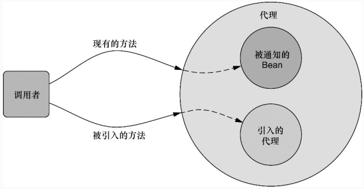

2017 10 02 Spring框架：什么是面向切面编程
切面能帮助我们模块化横切关注点。简而言之，横切关注点可以被描述为影响应用多处的功能。例如，安全就是一个横切关注点，应用中的许多方法都会涉及到安全规则。图4.1直观呈现了横切关注点的概念。
图4.1 切面实现了横切关注点（跨多个应用对象的逻辑）的模块化
图4.1展现了一个被划分为模块的典型应用。每个模块的核心功能都是为特定业务领域提供服务，但是这些模块都需要类似的辅助功能，例如安全和事务管理。
如果要重用通用功能的话，最常见的面向对象技术是继承（inheritance）或委托（delegation）。但是，如果在整个应用中都使用相同的基类，继承往往会导致一个脆弱的对象体系；而使用委托可能需要对委托对象进行复杂的调用。
切面提供了取代继承和委托的另一种可选方案，而且在很多场景下更清晰简洁。在使用面向切面编程时，我们仍然在一个地方定义通用功能，但是可以通过声明的方式定义这个功能要以何种方式在何处应用，而无需修改受影响的类。横切关注点可以被模块化为特殊的类，这些类被称为切面（aspect）。这样做有两个好处：
- 首先，现在每个关注点都集中于一个地方，而不是分散到多处代码中；
- 其次，服务模块更简洁，因为它们只包含主要关注点（或核心功能）的代码，而次要关注点的代码被转移到切面中了。
定义AOP术语
与大多数技术一样，AOP已经形成了自己的术语。描述切面的常用术语有通知（advice）、切点（pointcut）和连接点（join point）。图4.2展示了这些概念是如何关联在一起的。
图4.2 在一个或多个连接点上，可以把切面的功能（通知）织入到程序的执行过程中
遗憾的是，大多数用于描述AOP功能的术语并不直观，尽管如此，它们现在已经是AOP行话的组成部分了，为了理解AOP，我们必须了解这些术语。在我们进入某个领域之前，必须学会在这个领域该如何说话。
通知（Advice）
当抄表员出现在我们家门口时，他们要登记用电量并回去向电力公司报告。显然，他们必须有一份需要抄表的住户清单，他们所汇报的信息也很重要，但记录用电量才是抄表员的主要工作。
类似地，切面也有目标——它必须要完成的工作。在AOP术语中，切面的工作被称为通知。
通知定义了切面是什么以及何时使用。除了描述切面要完成的工作，通知还解决了何时执行这个工作的问题。它应该应用在某个方法被调用之前？之后？之前和之后都调用？还是只在方法抛出异常时调用？
Spring切面可以应用5种类型的通知：
- 前置通知（Before）：在目标方法被调用之前调用通知功能；
- 后置通知（After）：在目标方法完成之后调用通知，此时不会关心方法的输出是什么；
- 返回通知（After-returning）：在目标方法成功执行之后调用通知；
- 异常通知（After-throwing）：在目标方法抛出异常后调用通知；
- 环绕通知（Around）：通知包裹了被通知的方法，在被通知的方法调用之前和调用之后执行自定义的行为。
连接点（Join point）
电力公司为多个住户提供服务，甚至可能是整个城市。每家都有一个电表，这些电表上的数字都需要读取，因此每家都是抄表员的潜在目标。抄表员也许能够读取各种类型的设备，但是为了完成他的工作，他的目标应该房屋内所安装的电表。
同样，我们的应用可能也有数以千计的时机应用通知。这些时机被称为连接点。连接点是在应用执行过程中能够插入切面的一个点。这个点可以是调用方法时、抛出异常时、甚至修改一个字段时。切面代码可以利用这些点插入到应用的正常流程之中，并添加新的行为。
切点（Poincut）
如果让一位抄表员访问电力公司所服务的所有住户，那肯定是不现实的。实际上，电力公司为每一个抄表员都分别指定某一块区域的住户。类似地，一个切面并不需要通知应用的所有连接点。切点有助于缩小切面所通知的连接点的范围。
如果说通知定义了切面的“什么”和“何时”的话，那么切点就定义了“何处”。切点的定义会匹配通知所要织入的一个或多个连接点。我们通常使用明确的类和方法名称，或是利用正则表达式定义所匹配的类和方法名称来指定这些切点。有些AOP框架允许我们创建动态的切点，可以根据运行时的决策（比如方法的参数值）来决定是否应用通知。
切面（Aspect）
当抄表员开始一天的工作时，他知道自己要做的事情（报告用电量）和从哪些房屋收集信息。因此，他知道要完成工作所需要的一切东西。
切面是通知和切点的结合。通知和切点共同定义了切面的全部内容——它是什么，在何时和何处完成其功能。
引入（Introduction）
引入允许我们向现有的类添加新方法或属性。例如，我们可以创建一个Auditable通知类，该类记录了对象最后一次修改时的状态。这很简单，只需一个方法，setLastModified(Date)，和一个实例变量来保存这个状态。然后，这个新方法和实例变量就可以被引入到现有的类中，从而可以在无需修改这些现有的类的情况下，让它们具有新的行为和状态。
织入（Weaving）
织入是把切面应用到目标对象并创建新的代理对象的过程。切面在指定的连接点被织入到目标对象中。在目标对象的生命周期里有多个点可以进行织入：
- 编译期：切面在目标类编译时被织入。这种方式需要特殊的编译器。AspectJ的织入编译器就是以这种方式织入切面的。
- 类加载期：切面在目标类加载到JVM时被织入。这种方式需要特殊的类加载器（ClassLoader），它可以在目标类被引入应用之前增强该目标类的字节码。AspectJ 5的加载时织入（load-time weaving，LTW）就支持以这种方式织入切面。
- 运行期：切面在应用运行的某个时刻被织入。一般情况下，在织入切面时，AOP容器会为目标对象动态地创建一个代理对象。Spring AOP就是以这种方式织入切面的。
要掌握的新术语可真不少啊。再看一下图4.1，现在我们已经了解了如下的知识，通知包含了需要用于多个应用对象的横切行为；连接点是程序执行过程中能够应用通知的所有点；切点定义了通知被应用的具体位置（在哪些连接点）。其中关键的概念是切点定义了哪些连接点会得到通知。
我们已经了解了一些基础的AOP术语，现在让我们再看看这些AOP的核心概念是如何在Spring中实现的。
Spring对AOP的支持
并不是所有的AOP框架都是相同的，它们在连接点模型上可能有强弱之分。有些允许在字段修饰符级别应用通知，而另一些只支持与方法调用相关的连接点。它们织入切面的方式和时机也有所不同。但是无论如何，创建切点来定义切面所织入的连接点是AOP框架的基本功能。
因为这是一本介绍Spring的图书，所以我们会关注Spring AOP。虽然如此，Spring和AspectJ项目之间有大量的协作，而且Spring对AOP的支持在很多方面借鉴了AspectJ项目。
Spring提供了4种类型的AOP支持：
- 基于代理的经典Spring AOP；
- 纯POJO切面；
- @AspectJ注解驱动的切面；
- 注入式AspectJ切面（适用于Spring各版本）。
前三种都是Spring AOP实现的变体，Spring AOP构建在动态代理基础之上，因此，Spring对AOP的支持局限于方法拦截。
术语“经典”通常意味着是很好的东西。老爷车、经典高尔夫球赛、可口可乐精品都是好东西。但是Spring的经典AOP编程模型并不怎么样。当然，曾经它的确非常棒。但是现在Spring提供了更简洁和干净的面向切面编程方式。引入了简单的声明式AOP和基于注解的AOP之后，Spring经典的AOP看起来就显得非常笨重和过于复杂，直接使用 ProxyFactory Bean会让人感觉厌烦。所以在本书中我不会再介绍经典的Spring AOP。
借助Spring的aop命名空间，我们可以将纯POJO转换为切面。实际上，这些POJO只是提供了满足切点条件时所要调用的方法。遗憾的是，这种技术需要XML配置，但这的确是声明式地将对象转换为切面的简便方式。
Spring借鉴了AspectJ的切面，以提供注解驱动的AOP。本质上，它依然是Spring基于代理的AOP，但是编程模型几乎与编写成熟的AspectJ注解切面完全一致。这种AOP风格的好处在于能够不使用XML来完成功能。
如果你的AOP需求超过了简单的方法调用（如构造器或属性拦截），那么你需要考虑使用AspectJ来实现切面。在这种情况下，上文所示的第四种类型能够帮助你将值注入到AspectJ驱动的切面中。
我们在将在本章展示更多的Spring AOP技术，但是在开始之前，我们必须要了解Spring AOP框架的一些关键知识。
Spring通知是Java编写的
Spring所创建的通知都是用标准的Java类编写的。这样的话，我们就可以使用与普通Java开发一样的集成开发环境（IDE）来开发切面。而且，定义通知所应用的切点通常会使用注解或在Spring配置文件里采用XML来编写，这两种语法对于Java开发者来说都是相当熟悉的。
AspectJ与之相反。虽然AspectJ现在支持基于注解的切面，但AspectJ最初是以Java语言扩展的方式实现的。这种方式有优点也有缺点。通过特有的AOP语言，我们可以获得更强大和细粒度的控制，以及更丰富的AOP工具集，但是我们需要额外学习新的工具和语法。
Spring在运行时通知对象
通过在代理类中包裹切面，Spring在运行期把切面织入到Spring管理的bean中。如图4.3所示，代理类封装了目标类，并拦截被通知方法的调用，再把调用转发给真正的目标bean。当代理拦截到方法调用时，在调用目标bean方法之前，会执行切面逻辑。
图4.3 Spring的切面由包裹了目标对象的代理类实现。代理类处理方法的调用，执行额外的切面逻辑，并调用目标方法
直到应用需要被代理的bean时，Spring才创建代理对象。如果使用的是ApplicationContext的话，在ApplicationContext从BeanFactory中加载所有bean的时候，Spring才会创建被代理的对象。因为Spring运行时才创建代理对象，所以我们不需要特殊的编译器来织入Spring AOP的切面。
Spring只支持方法级别的连接点
正如前面所探讨过的，通过使用各种AOP方案可以支持多种连接点模型。因为Spring基于动态代理，所以Spring只支持方法连接点。这与一些其他的AOP框架是不同的，例如AspectJ和JBoss，除了方法切点，它们还提供了字段和构造器接入点。Spring缺少对字段连接点的支持，无法让我们创建细粒度的通知，例如拦截对象字段的修改。而且它不支持构造器连接点，我们就无法在bean创建时应用通知。
但是方法拦截可以满足绝大部分的需求。如果需要方法拦截之外的连接点拦截功能，那么我们可以利用Aspect来补充Spring AOP的功能。
对于什么是AOP以及Spring如何支持AOP的，我们现在已经有了一个大致的了解。现在是时候学习如何在Spring中创建切面了，让我们先从Spring的声明式AOP模型开始。
通过切点来选择连接点
正如之前所提过的，切点用于准确定位应该在什么地方应用切面的通知。通知和切点是切面的最基本元素。因此，了解如何编写切点非常重要。
在Spring AOP中，要使用AspectJ的切点表达式语言来定义切点。如果你已经很熟悉AspectJ，那么在Spring中定义切点就感觉非常自然。但是如果你一点都不了解AspectJ的话，本小节我们将快速介绍一下如何编写AspectJ风格的切点。如果你想进一步了解AspectJ和AspectJ切点表达式语言，我强烈推荐Ramniva Laddad编写的《AspectJ in Action》第二版（Manning，2009，www.manning.com/laddad2/）。
关于Spring AOP的AspectJ切点，最重要的一点就是Spring仅支持AspectJ切点指示器（pointcut designator）的一个子集。让我们回顾下，Spring是基于代理的，而某些切点表达式是与基于代理的AOP无关的。表4.1列出了Spring AOP所支持的AspectJ切点指示器。
表4.1 Spring借助AspectJ的切点表达式语言来定义Spring切面
| AspectJ指示器 | 描述 |
|---|---|
| arg() | 限制连接点匹配参数为指定类型的执行方法 |
| @args | 限制连接点匹配参数由指定注解标注的执行方法 |
| execution() | 用于匹配是连接点的执行方法 |
| this() | 限制连接点匹配AOP代理的bean引用为指定类型的类 |
| target | 限制连接点匹配目标对象为指定类型的类 |
| @target() | 限制连接点匹配特定的执行对象，这些对象对应的类要具有指定类型的注解 |
| within() | 限制连接点匹配指定的类型 |
| @within() | 限制连接点匹配指定注解所标注的类型（当使用Spring AOP时，方法定义在由指定的注解所标注的类里） |
| @annotation | 限定匹配带有指定注解的连接点 |
在Spring中尝试使用AspectJ其他指示器时，将会抛出IllegalArgument-Exception异常。
当我们查看如上所展示的这些Spring支持的指示器时，注意只有execution指示器是实际执行匹配的，而其他的指示器都是用来限制匹配的。这说明execution指示器是我们在编写切点定义时最主要使用的指示器。在此基础上，我们使用其他指示器来限制所匹配的切点。
编写切点
为了阐述Spring中的切面，我们需要有个主题来定义切面的切点。为此，我们定义一个Performance接口：
package concert;
public interface Performance {
public void perform();
}
Performance可以代表任何类型的现场表演，如舞台剧、电影或音乐会。假设我们想编写Performance的perform()方法触发的通知。图4.4展现了一个切点表达式，这个表达式能够设置当perform()方法执行时触发通知的调用。
我们使用execution()指示器选择Performance的perform()方法。方法表达式以“*”号开始，表明了我们不关心方法返回值的类型。然后，我们指定了全限定类名和方法名。对于方法参数列表，我们使用两个点号（..）表明切点要选择任意的perform()方法，无论该方法的入参是什么。
现在假设我们需要配置的切点仅匹配concert包。在此场景下，可以使用within()指示器来限制匹配，如图4.5所示。

请注意我们使用了“&&”操作符把execution()和within()指示器连接在一起形成与（and）关系（切点必须匹配所有的指示器）。类似地，我们可以使用“||”操作符来标识或（or）关系，而使用“!”操作符来标识非（not）操作。
因为“&”在XML中有特殊含义，所以在Spring的XML配置里面描述切点时，我们可以使用and来代替“&&”。同样，or和not可以分别用来代替“||”和“!”。
在切点中选择bean
除了表4.1所列的指示器外，Spring还引入了一个新的bean()指示器，它允许我们在切点表达式中使用bean的ID来标识bean。bean()使用bean ID或bean名称作为参数来限制切点只匹配特定的bean。
例如，考虑如下的切点：
execution(* concert.Performance.perform())
and bean('woodstock')
在这里，我们希望在执行Performance的perform()方法时应用通知，但限定bean的ID为woodstock。
在某些场景下，限定切点为指定的bean或许很有意义，但我们还可以使用非操作为除了特定ID以外的其他bean应用通知：
execution(* concert.Performance.perform())
and !bean('woodstock')
在此场景下，切面的通知会被编织到所有ID不为woodstock的bean中。
现在，我们已经讲解了编写切点的基础知识，让我们再了解一下如何编写通知和使用这些切点声明切面。
使用注解创建切面
使用注解来创建切面是AspectJ 5所引入的关键特性。AspectJ 5之前，编写AspectJ切面需要学习一种Java语言的扩展，但是AspectJ面向注解的模型可以非常简便地通过少量注解把任意类转变为切面。
我们已经定义了Performance接口，它是切面中切点的目标对象。现在，让我们使用AspecJ注解来定义切面。
定义切面
如果一场演出没有观众的话，那不能称之为演出。对不对？从演出的角度来看，观众是非常重要的，但是对演出本身的功能来讲，它并不是核心，这是一个单独的关注点。因此，将观众定义为一个切面，并将其应用到演出上就是较为明智的做法。
程序清单4.1展现了Audience类，它定义了我们所需的一个切面。
程序清单4.1 Audience类：观看演出的切面
Audience类使用@AspectJ注解进行了标注。该注解表明Audience不仅仅是一个POJO，还是一个切面。Audience类中的方法都使用注解来定义切面的具体行为。
Audience有四个方法，定义了一个观众在观看演出时可能会做的事情。在演出之前，观众要就坐（takeSeats()）并将手机调至静音状态（silenceCellPhones()）。如果演出很精彩的话，观众应该会鼓掌喝彩（applause()）。不过，如果演出没有达到观众预期的话，观众会要求退款（demandRefund()）。
可以看到，这些方法都使用了通知注解来表明它们应该在什么时候调用。AspectJ提供了五个注解来定义通知，如表4.2所示。
表4.2 Spring使用AspectJ注解来声明通知方法
| 注解 | 通知 |
|---|---|
| @After | 通知方法会在目标方法返回或抛出异常后调用 |
| @AfterReturning | 通知方法会在目标方法返回后调用 |
| @AfterThrowing | 通知方法会在目标方法抛出异常后调用 |
| @Around | 通知方法会将目标方法封装起来 |
| @Before | 通知方法会在目标方法调用之前执行 |
Audience使用到了前面五个注解中的三个。takeSeats()和silence CellPhones()方法都用到了@Before注解，表明它们应该在演出开始之前调用。applause()方法使用了@AfterReturning注解，它会在演出成功返回后调用。demandRefund()方法上添加了@AfterThrowing注解，这表明它会在抛出异常以后执行。
你可能已经注意到了，所有的这些注解都给定了一个切点表达式作为它的值，同时，这四个方法的切点表达式都是相同的。其实，它们可以设置成不同的切点表达式，但是在这里，这个切点表达式就能满足所有通知方法的需求。让我们近距离看一下这个设置给通知注解的切点表达式，我们发现它会在Performance的perform()方法执行时触发。
相同的切点表达式我们重复了四遍，这可真不是什么光彩的事情。这样的重复让人感觉有些不对劲。如果我们只定义这个切点一次，然后每次需要的时候引用它，那么这会是一个很好的方案。
幸好，我们完全可以这样做：@Pointcut注解能够在一个@AspectJ切面内定义可重用的切点。接下来的程序清单4.2展现了新的Audience，现在它使用了@Pointcut。
程序清单4.2 通过@Pointcut注解声明频繁使用的切点表达式
在Audience中，performance()方法使用了@Pointcut注解。为@Pointcut注解设置的值是一个切点表达式，就像之前在通知注解上所设置的那样。通过在performance()方法上添加@Pointcut注解，我们实际上扩展了切点表达式语言，这样就可以在任何的切点表达式中使用performance()了，如果不这样做的话，你需要在这些地方使用那个更长的切点表达式。我们现在把所有通知注解中的长表达式都替换成了performance()。
performance()方法的实际内容并不重要，在这里它实际上应该是空的。其实该方法本身只是一个标识，供@Pointcut注解依附。
需要注意的是，除了注解和没有实际操作的performance()方法，Audience类依然是一个POJO。我们能够像使用其他的Java类那样调用它的方法，它的方法也能够独立地进行单元测试，这与其他的Java类并没有什么区别。Audience只是一个Java类，只不过它通过注解表明会作为切面使用而已。
像其他的Java类一样，它可以装配为Spring中的bean：
@Bean
public Audience audience() {
return new Audience();
}
如果你就此止步的话，Audience只会是Spring容器中的一个bean。即便使用了AspectJ注解，但它并不会被视为切面，这些注解不会解析，也不会创建将其转换为切面的代理。
如果你使用JavaConfig的话，可以在配置类的类级别上通过使用EnableAspectJ-AutoProxy注解启用自动代理功能。程序清单4.3展现了如何在JavaConfig中启用自动代理。
程序清单4.3 在JavaConfig中启用AspectJ注解的自动代理
假如你在Spring中要使用XML来装配bean的话，那么需要使用Spring aop命名空间中的<aop:aspectj-autoproxy>元素。下面的XML配置展现了如何完成该功能。
程序清单4.4 在XML中，通过Spring的aop命名空间启用AspectJ自动代理
不管你是使用JavaConfig还是XML，AspectJ自动代理都会为使用@Aspect注解的bean创建一个代理，这个代理会围绕着所有该切面的切点所匹配的bean。在这种情况下，将会为Concertbean创建一个代理，Audience类中的通知方法将会在perform()调用前后执行。
我们需要记住的是，Spring的AspectJ自动代理仅仅使用@AspectJ作为创建切面的指导，切面依然是基于代理的。在本质上，它依然是Spring基于代理的切面。这一点非常重要，因为这意味着尽管使用的是@AspectJ注解，但我们仍然限于代理方法的调用。如果想利用AspectJ的所有能力，我们必须在运行时使用AspectJ并且不依赖Spring来创建基于代理的切面。
到现在为止，我们的切面在定义时，使用了不同的通知方法来实现前置通知和后置通知。但是表4.2还提到了另外的一种通知：环绕通知（around advice）。环绕通知与其他类型的通知有所不同，因此值得花点时间来介绍如何进行编写。
创建环绕通知
环绕通知是最为强大的通知类型。它能够让你所编写的逻辑将被通知的目标方法完全包装起来。实际上就像在一个通知方法中同时编写前置通知和后置通知。
为了阐述环绕通知，我们重写Audience切面。这次，我们使用一个环绕通知来代替之前多个不同的前置通知和后置通知。
程序清单4.5 使用环绕通知重新实现Audience切面
在这里，@Around注解表明watchPerformance()方法会作为performance()切点的环绕通知。在这个通知中，观众在演出之前会将手机调至静音并就坐，演出结束后会鼓掌喝彩。像前面一样，如果演出失败的话，观众会要求退款。
可以看到，这个通知所达到的效果与之前的前置通知和后置通知是一样的。但是，现在它们位于同一个方法中，不像之前那样分散在四个不同的通知方法里面。
关于这个新的通知方法，你首先注意到的可能是它接受ProceedingJoinPoint作为参数。这个对象是必须要有的，因为你要在通知中通过它来调用被通知的方法。通知方法中可以做任何的事情，当要将控制权交给被通知的方法时，它需要调用ProceedingJoinPoint的proceed()方法。
需要注意的是，别忘记调用proceed()方法。如果不调这个方法的话，那么你的通知实际上会阻塞对被通知方法的调用。有可能这就是你想要的效果，但更多的情况是你希望在某个点上执行被通知的方法。
有意思的是，你可以不调用proceed()方法，从而阻塞对被通知方法的访问，与之类似，你也可以在通知中对它进行多次调用。要这样做的一个场景就是实现重试逻辑，也就是在被通知方法失败后，进行重复尝试。
处理通知中的参数
到目前为止，我们的切面都很简单，没有任何参数。唯一的例外是我们为环绕通知所编写的watchPerformance()示例方法中使用了ProceedingJoinPoint作为参数。除了环绕通知，我们编写的其他通知不需要关注传递给被通知方法的任意参数。这很正常，因为我们所通知的perform()方法本身没有任何参数。
但是，如果切面所通知的方法确实有参数该怎么办呢？切面能访问和使用传递给被通知方法的参数吗？
为了阐述这个问题，让我们重新看一下2.4.4小节中的BlankDisc样例。play()方法会循环所有的磁道并调用playTrack()方法。但是，我们也可以通过playTrack()方法直接播放某一个磁道中的歌曲。
假设你想记录每个磁道被播放的次数。一种方法就是修改playTrack()方法，直接在每次调用的时候记录这个数量。但是，记录磁道的播放次数与播放本身是不同的关注点，因此不应该属于playTrack()方法。看起来，这应该是切面要完成的任务。
为了记录每个磁道所播放的次数，我们创建了TrackCounter类，它是通知playTrack()方法的一个切面。下面的程序清单展示了这个切面。
程序清单4.6 使用参数化的通知来记录磁道播放的次数
像之前所创建的切面一样，这个切面使用@Pointcut注解定义命名的切点，并使用@Before将一个方法声明为前置通知。但是，这里的不同点在于切点还声明了要提供给通知方法的参数。图4.6将切点表达式进行了分解，以展现参数是在什么地方指定的。
图4.6 在切点表达式中声明参数，这个参数传入到通知方法中
在图4.6中需要关注的是切点表达式中的args(trackNumber)限定符。它表明传递给playTrack()方法的int类型参数也会传递到通知中去。参数的名称trackNumber也与切点方法签名中的参数相匹配。
这个参数会传递到通知方法中，这个通知方法是通过@Before注解和命名切点trackPlayed(trackNumber)定义的。切点定义中的参数与切点方法中的参数名称是一样的，这样就完成了从命名切点到通知方法的参数转移。
现在，我们可以在Spring配置中将BlankDisc和TrackCounter定义为bean，并启用AspectJ自动代理，如程序清单4.7所示。
程序清单4.7 配置TrackCount记录每个磁道播放的次数
最后，为了证明它能正常工作，你可以编写如下的简单测试。它会播放几个磁道并通过TrackCounter断言播放的数量。
程序清单4.8 测试TrackCounter切面
到目前为止，在我们所使用的切面中，所包装的都是被通知对象的已有方法。但是，方法包装仅仅是切面所能实现的功能之一。让我们看一下如何通过编写切面，为被通知的对象引入全新的功能。
通过注解引入新功能
一些编程语言，例如Ruby和Groovy，有开放类的理念。它们可以不用直接修改对象或类的定义就能够为对象或类增加新的方法。不过，Java并不是动态语言。一旦类编译完成了，我们就很难再为该类添加新的功能了。
但是如果仔细想想，我们在本章中不是一直在使用切面这样做吗？当然，我们还没有为对象增加任何新的方法，但是已经为对象拥有的方法添加了新功能。如果切面能够为现有的方法增加额外的功能，为什么不能为一个对象增加新的方法呢？实际上，利用被称为引入的AOP概念，切面可以为Spring bean添加新方法。
回顾一下，在Spring中，切面只是实现了它们所包装bean相同接口的代理。如果除了实现这些接口，代理也能暴露新接口的话，会怎么样呢？那样的话，切面所通知的bean看起来像是实现了新的接口，即便底层实现类并没有实现这些接口也无所谓。图4.7展示了它们是如何工作的。

图4.7 使用Spring AOP，我们可以为bean引入新的方法。代理拦截调用并委托给实现该方法的其他对象
我们需要注意的是，当引入接口的方法被调用时，代理会把此调用委托给实现了新接口的某个其他对象。实际上，一个bean的实现被拆分到了多个类中。
为了验证该主意能行得通，我们为示例中的所有的Performance实现引入下面的Encoreable接口：
package concert;
public interface Encoreable {
void performEncore();
}
暂且先不管Encoreable是不是一个真正存在的单词，我们需要有一种方式将这个接口应用到Performance实现中。我们现在假设你能够访问Performance的所有实现，并对其进行修改，让它们都实现Encoreable接口。但是，从设计的角度来看，这并不是最好的做法，并不是所有的Performance都是具有Encoreable特性的。另外一方面，有可能无法修改所有的Performance实现，当使用第三方实现并且没有源码的时候更是如此。
值得庆幸的是，借助于AOP的引入功能，我们可以不必在设计上妥协或者侵入性地改变现有的实现。为了实现该功能，我们要创建一个新的切面：
package concert;
import org.aspectj.lang.annotation.Aspect;
import org.aspectj.lang.annotation.DeclareParents;
@Aspect
public class EncoreableIntroducer {
@DeclareParents(value="concert.Performance+",
defaultImpl=DefaultEncoreable.class)
public static Encoreable encoreable;
}
可以看到，EncoreableIntroducer是一个切面。但是，它与我们之前所创建的切面不同，它并没有提供前置、后置或环绕通知，而是通过@DeclareParents注解，将Encoreable接口引入到Performance bean中。
@DeclareParents注解由三部分组成：
value属性指定了哪种类型的bean要引入该接口。在本例中，也就是所有实现Performance的类型。（标记符后面的加号表示是Performance的所有子类型，而不是Performance本身。）defaultImpl属性指定了为引入功能提供实现的类。在这里，我们指定的是DefaultEncoreable提供实现。@DeclareParents注解所标注的静态属性指明了要引入了接口。在这里，我们所引入的是Encoreable接口。
和其他的切面一样，我们需要在Spring应用中将EncoreableIntroducer声明为一个bean：
<bean class="concert.EncoreableIntroducer" />
Spring的自动代理机制将会获取到它的声明，当Spring发现一个bean使用了@Aspect注解时，Spring就会创建一个代理，然后将调用委托给被代理的bean或被引入的实现，这取决于调用的方法属于被代理的bean还是属于被引入的接口。
在Spring中，注解和自动代理提供了一种很便利的方式来创建切面。它非常简单，并且只涉及到最少的Spring配置。但是，面向注解的切面声明有一个明显的劣势：你必须能够为通知类添加注解。为了做到这一点，必须要有源码。